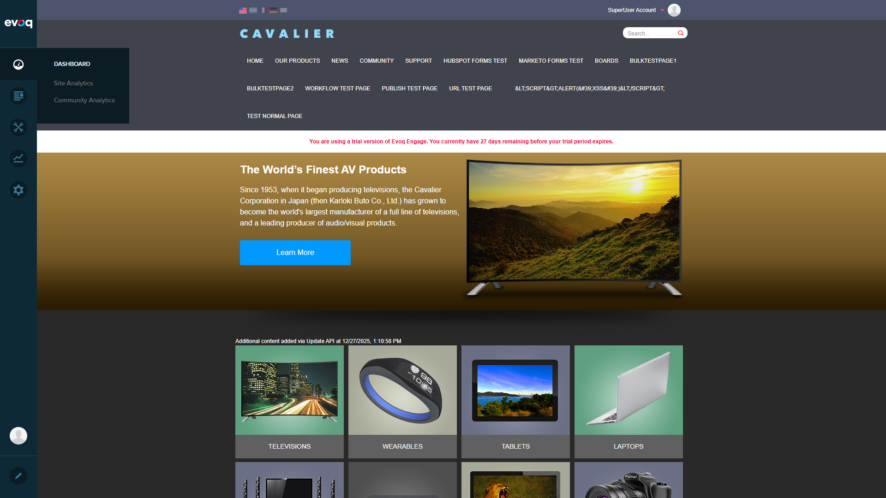

Description: Navigation controls for paginated data in tag statistics and popular content sections of Community Analytics.
BLOCKING BUG FOUND
Issue: Community Analytics module fails to load due to JavaScript error
Error Message:
TypeError: utility.serializeCustomDate is not a function
at dashboardClass.init (social-dashboard-instance.js)
Impact: The entire Community Analytics module cannot be accessed, preventing any testing of the Pagination Controls feature.
Root Cause Analysis: The code in social-dashboard-instance.js at line ~1213 calls utility.serializeCustomDate(new Date(new Date().toUTCString())), but the serializeCustomDate function is not defined in the utility object when the Community Analytics module initializes.
Blocked - Module failed to load (Note: Code review shows this feature doesn't exist - only prev/next navigation)
Test with single page of data
NOT TESTED
Blocked - Module failed to load
Verify page size options
NOT TESTED
Blocked - Module failed to load (Note: Code review shows fixed page sizes: 5 for Popular Content, 6 for Tag Stats)
Test boundary conditions
NOT TESTED
Blocked - Module failed to load
Validate current page indicator
NOT TESTED
Blocked - Module failed to load
Code Review Findings
Before attempting UI testing, a code review was performed on the relevant files:
Pagination Implementation Details
Component:page-activities Knockout.js component
File:koComponents/pageActivities.js
Pager Controls: Simple prev/next navigation arrows (no page jump or page size selector)
Visibility: Controlled by pagerVisible computed - shows when totalResults > pageSize
Boundary States:pagerPrevClass/pagerNextClass handle disabled states
Paginated Sections
Section
Page Size
API Endpoint
Popular Content
5 items
GetPopularContent / GetModulePopularContent
Tag Statistics
6 items
GetTagStats / GetModuleTagStats
Backend API (CommunityAnalyticsController.cs)
The API supports pagination with pageIndex and pageSize parameters:
GetTagStats - Line 57-61
GetPopularContent - Line 63-68
GetModuleTagStats - Line 84-89
GetModulePopularContent - Line 91-96
Test Steps Executed
Browser resized to 1920x1080
Reviewed pagination code in pageActivities.js and CommunityAnalyticsController.cs
Navigated to http://localhost:8081
Logged in as SuperUser (host/Pass123456)
Dismissed Copilot welcome dialog
Accessed PersonaBar Dashboard menu
Clicked on Community Analytics - MODULE FAILED TO LOAD
Screenshots
Step 1: Community Analytics Menu
Dashboard submenu showing Site Analytics and Community Analytics options
Step 2: After Clicking Community Analytics
Community Analytics panel attempting to load
Step 3: Site Analytics (Working)
Site Analytics loads successfully (for comparison)
Step 4: Dashboard Submenu

Dashboard submenu showing both analytics options
Step 5: Community Analytics Error State
Community Analytics panel shows blank/white content due to JavaScript error - Pagination Controls cannot be tested
Recommendations
Fix the JavaScript Error: Investigate why utility.serializeCustomDate is undefined when Community Analytics loads. This function may need to be added to the utility object or the dependency loading order may need adjustment.
Retest After Fix: Once the Community Analytics module loads successfully, the following pagination tests should be executed:
Verify prev/next navigation in Tag Statistics section
Verify prev/next navigation in Popular Content section
Test boundary conditions (first page - prev disabled, last page - next disabled)
Verify pager visibility when data exceeds page size
Verify pager hidden when data fits within page size
Compare with Site Analytics: Site Analytics loads successfully using similar infrastructure. Compare the initialization code to identify the difference.